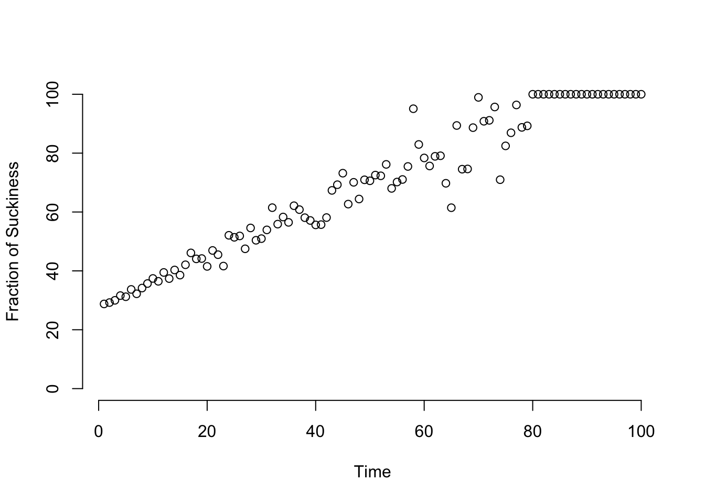
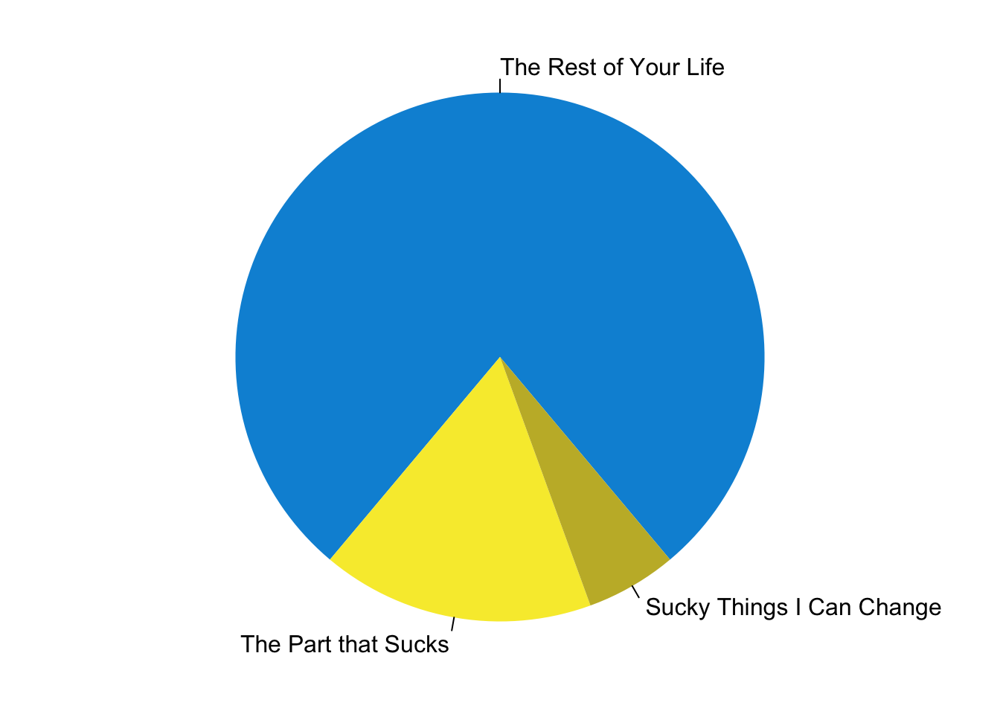
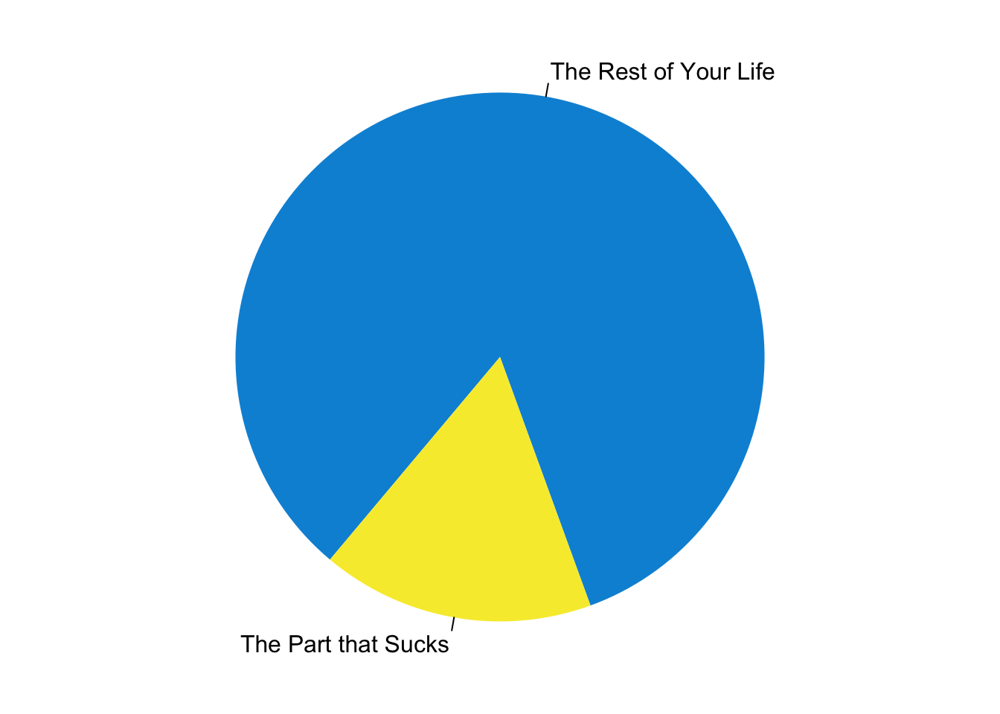

The Taxonomy
It is given that things in your life can be categorized into two mutually exclusive groups.
Things that suck
The rest
The things that suck occur at a frequency of \(p\) whereas everything else in your life can be represented as \(q = 1-p\) . Clearly \(p + q = 1\) and this is nice because I’m a population geneticist and we like to deal in simple probabilities.
Visually, we can represent the relationship between the things that do suck and the things that do not as a simple pie chart.
The Contents
So what are these things that ‘suck’, how do we know about them, how can we identify them, etc.? As in Buddhism, things that suck are ultimately the things in your life that cause suffering. Suffering is inevitable and part of the human experience. Some people even seem to be needing suffering as a condition of existence (my grandparents for example-loved to be miserable).
In the modern age, the kinds of things that suck include (but are not limited to):
Running out of ink on your printer the morning your paper is due,
Being a Cleveland Browns fan,
Stevia,
Waking up 45 minutes before your alarm goes off,
Pop Music,
The Windows Operating System,
Stepping in cat hairballs in the middle of the night,
Finding that door dash delivered you the veggie burger instead of the dozen wings.
I’m sure there are many additional things you can add to this list.
So it is also true that the “rest of that stuff in your life” is a pretty big grab-bag of items. That is OK. As long as each of them do not suck in any way, they can stay in this category. However, it is important that you look at these items often and Marie Condo them to see if they actually do suck but you’ve ignored them mostly because the amount of sucking they contribute to is only marginally larger than zero.
Be vigilant! Do not let these things persist in this state. You MUST eradicate and exile them to the “Suck” category. Failing to do so results in condition called Suck Creep, which through time, will slowly eat all of your non-sucking life parts and eventually your life will consist of 100% suck.

Mitigating Suckiness
So, one of the best ways to gain pleasure and enjoyment in your life is to figure out how to reduce that suckiness in your life and simply remove it.
In the examples above, we have a situation where roughly 22.2% of the life is classified as *The Part that Sucks”. Now, suppose that through some deep introspection and honest reflection on your part, you can identify 25% of the things in that category.
That situation looks like this:

Now, here is the solemn truth of this entire philosophy. If you can look at these things and:
Remove then from your life (e.g., stop using Windows),
Give them to someone else (e.g., rehome the cat), or
Reconfigure your life so they no longer live rent free in your head (e.g., become a Seattle Seahawks fan)
Then you can achieve what is technically called a period of suckiness reduction. These things are not guaranteed to stay static without constant vigilance. However, your life after this reduction will be more like this:

Then you will, by definition, have reduce the amount of suckiness in your life (compare this graph and the one above). A concomitant feature of this is that
Your life will now suck less.
Which is the “sunny side of the pyramid” we are all trying get to in life, isn’t it?